Keypoints are not just points
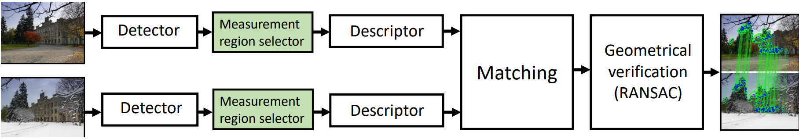
Wide baseline stereo matching often as perceived as establishing (key-)point correspondences between images. While this might be true for the some local features like SuperPoint , typically it is more than that.
Specifically, detectors like DoG, Harris, Hessian, KeyNet, ORB, and many others rate on scale-space provide at least 3 parameters: x, y, and scale.
Most of the local descriptors – SIFT, HardNet and so on – are not rotation invariant and those which are - mostly require complex matching function, , so the patch orientation has to be estimated anyway, in order to match reliably. This can be done by various methods: corners center of mass (ORB, dominant gradient orientation (SIFT) or by some learned estimator (OriNets,). Sometimes it is possible to rely on smartphone camera IMU or photographer and assume that images are upright.
Thus, we can assume that if local descriptors match, this means the local feature scale and orientation also match, at least approximately – see Figure below. Possible exceptions are cases, when the patch is symmetrical and orientation is ambiguous up to some symmetry group.
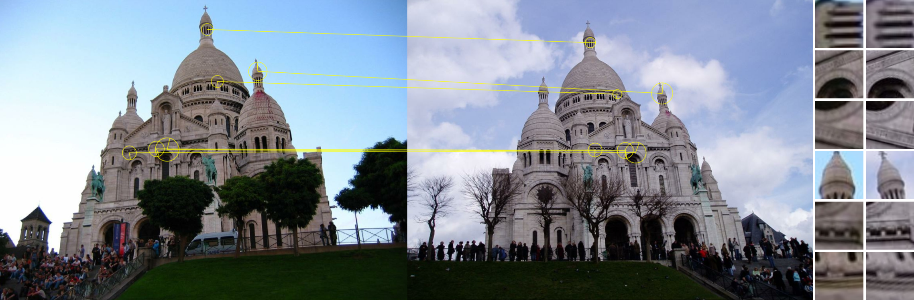
In addition, one could assume that we observe the patch not from the fronto-parallel position and try to estimate local normal, or, more precisely, affine shape of the feature point, modeling it as an ellipse instead of circle. One could also think of affine shape estimation as finding the camera position, from where the patch is seen in some “canonical” view.
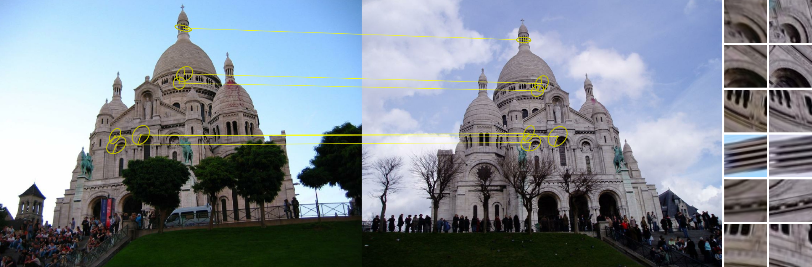
This gives us 3 points correspondences from a single local feature match, see an example in Figure below.
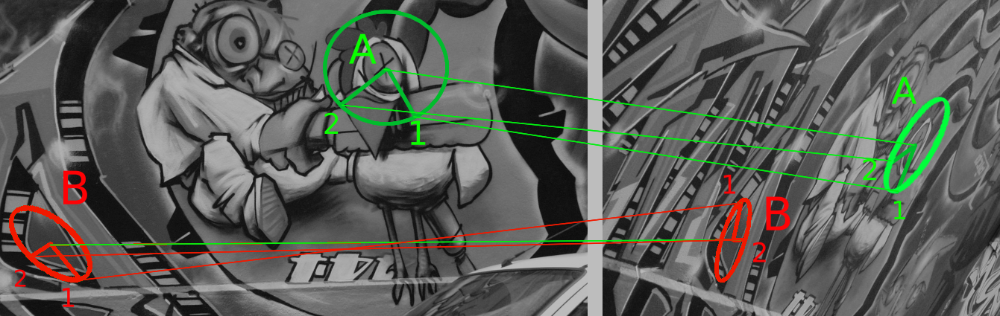
Why is it important and how to use it – see in current post. How to esimate local affine features robustly – in the next post.
Benefits of local affine features
Making descriptor job easier
The most straightforward benefit of using local affine features is that they increase the repeatability of the detector and potentially reduce appearance changes of a local patch caused by viewpoint difference. This makes possible matching more challenging image pairs.
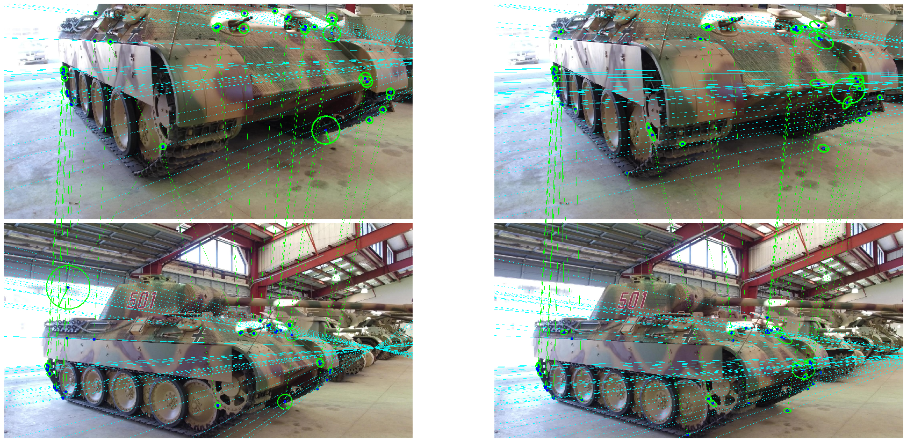
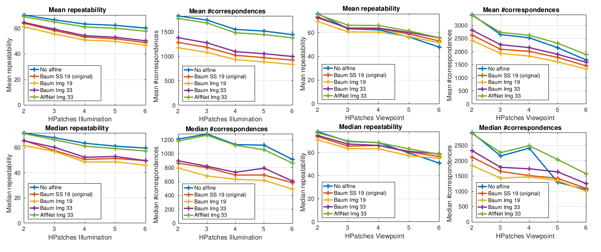
The practice is a little bit more complicated. Our recent benchmark, which measure the accuracy of the output fundamental matrix, shows that the difference in using affine and similarity-covariant features is quite minor. Specifically, the relative difference between SIFT vs SIFT-Affine features is 0.5% and between Hessian-SIFT and Hessian-AffNet SIFT is 5.1%, see Table below.
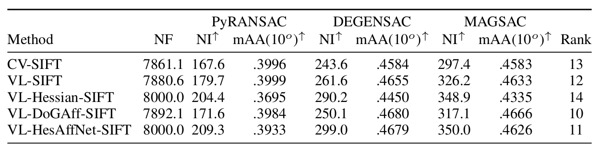
Therefore, if the benefit of local features would be to only improve descriptor extraction stage, it would be arguably not worth it. Luckily, there are more benefits, which are more pronounced.
Making RANSAC job easier
Let’s recall how RANSAC works.
- Randomly sample a minimally required number of tentative correspondences to fit the geometrical model of the scene: 4 for homography, 7 for epipolar geometry and estimate the model.
- Calculate “support”: other correspondeces, which are consistent with the model.
- Repeat steps (1), (2) and output the model which is supported with the most of correspondences. If you were lucky and have sampled all-inlier sample, meaning that all correspondences used to estimate the model were correct, you would have a correct model.
Reality is more complicated than I have just described, but the principle is the same. The most important part is the sampling and it is sensitive to inlier ratio \(\nu\) - the percentage of the correct correspondences in the set. Lets denote the minimal number of correspondences required to estimate the model as m. To recover the correct model with the confidence p one needs to sample the number of correspondences, which is described by formula:
\[\begin{equation} N = \frac{\log{(1 - p)}}{\log{(1 - \nu^{m})}} \end{equation}\]
Lets plot the how the number of required samples changes with inlier ratio for confidence equal 99%. Note the log scale on Y axis. Different lines are for different minimal sample size m.
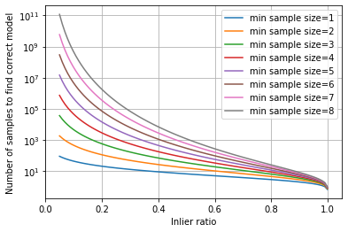
As you can see from the plot above, reducing the minimal sample size required for the model estimation even by 1 saves and order of magnitude of computation. In reality the benefit is a smaller, as modern RANSACs like GC-RANSAC and MAGSAC could estimate the correct model from the sample containing outliers, but it is still huge, especially for low inlier rate cases.
Image retrieval
The ideal case would be to estimate a model from just a single sample and that is exactly what is done in spatial reranking paper “Object retrieval with large vocabularies and fast spatial matching” by Philbin et.al .
Specifically, they are solving a particular object retrieval problem: given an image containing some object, return all the images from the database, which also containg the same object.
The inital list of images is formed by the descriptor distance and then is reranked. The authors propose to approximate a perspective change between two images as an affine image transformation, and count number of feature points, which are reprojected inside the second image. This number produces better ranking that the original short-list.
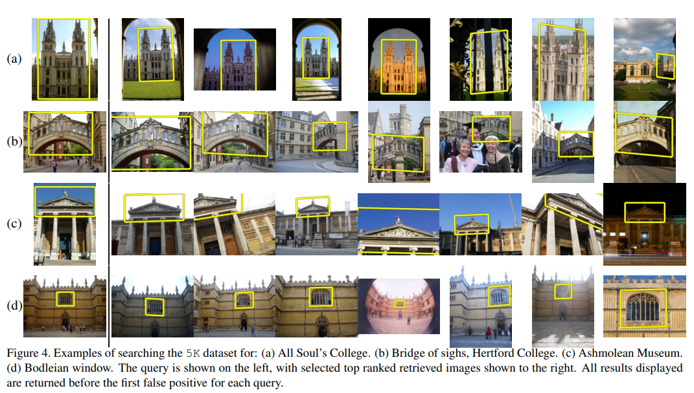
Back to wide baseline stereo
While working for spatial re-ranking, 3-degrees of freedom camera model is too rough for the wide baseline stereo. Yet, going from 4 point correspondences (PC) to 2 affine correspondences (AC) for homogaphy and from 7 PC to 3 AC for the fundamental matrix would be huge benefit anyway for the robust model estimation.
Various variant of RANSAC working for local features were proposed in the last 15 years: Perdoch et.al, Pritts et.al., Barath and Kukelova , Rodríguez et.al.
Finally, the systematic study of using is presented by Barath et.al in “Making Affine Correspondences Work in Camera Geometry Computation” paper. Authors show that if used naively, affine correspondence lead to worse results, because they are more noisy than point correspondences. However, there is a bag of tricks presented in the paper, which allow to solve the noise issue and make the affine RANSAC working in practice, resulting in orders of magnitude faster computation.
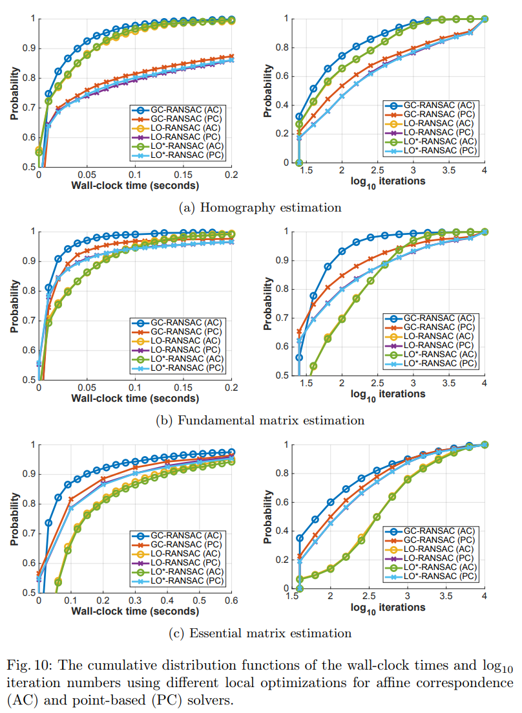
Moreover, for a special cases like autonomous driving, where the motion is mostly horizonal, one could even use 2 affine correspondes for both motion estimation and consistency check, significantly improving the efficiency of the outliers removal compared to the standard RANSAC loop.
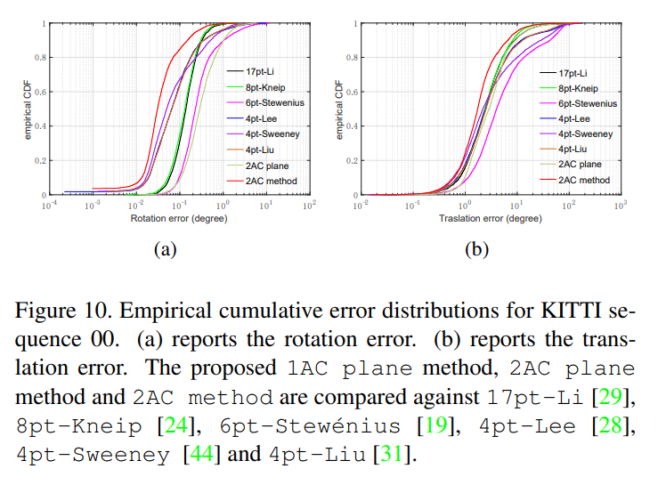
Besides the special case considerations, additional contraints can also come from running other algorithms, like monocular depth estimation. Such a constraint could reduce the required number of matches from two affine correspondences to a single one for calibrated camera case.
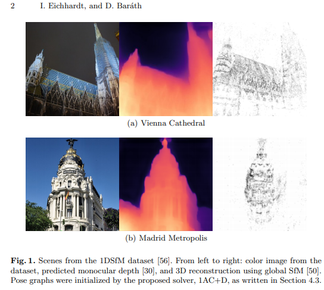
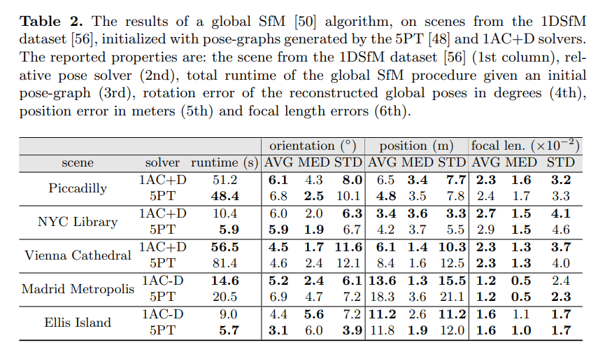
Application-specific benefits
Besides the wide baseline stereo, local affine features and correspondences have other applications. I will briefly describe some of them here (to be updated).
Image rectification
Instead of matching local features between two images one might match them within a single image. Why would someone do it? This allows finding repeated pattern: think about windows, doors and so on. Typically they have the same physical size, therefore the diffrence in local features around them could tell us about the geometry of the scene and lens distortion.
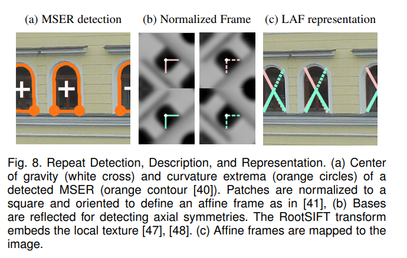
This is the idea of the series of works by Pritts and Chum.
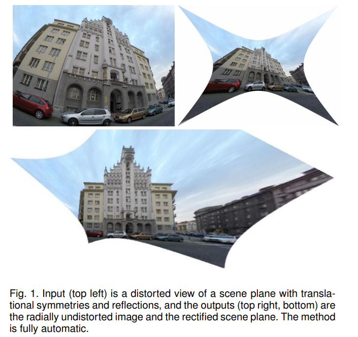
Surface normals estimation
Ivan Eichhardt and Levente Hajder have a series of works, exploiting the local affine correspondences for surface normals estimation
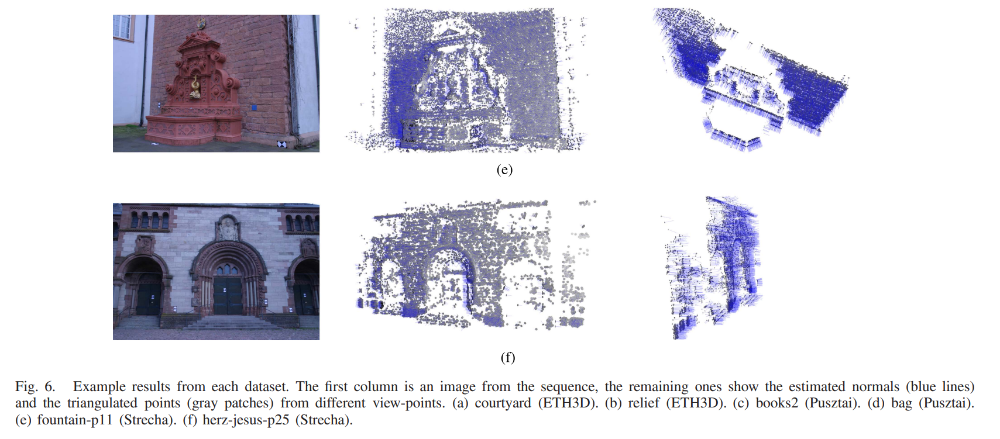
Summary
Despite not being popular right now, treating keypoints as local affine features has a lot of advantages over the traditional treatment the local correspondence as the point correspondences. In the next post I will describe a way of estimating the local feature affine shape and orientation.
References
[SuperPoint2017] Detone D., Malisiewicz T. and Rabinovich A., ``Superpoint: Self-Supervised Interest Point Detection and Description’’, CVPRW Deep Learning for Visual SLAM, vol. , number , pp. , 2018.
[Lowe99] D. Lowe, ``Object Recognition from Local Scale-Invariant Features’’, ICCV, 1999.
[Harris88] C. Harris and M. Stephens, ``A Combined Corner and Edge Detector’’, Fourth Alvey Vision Conference, 1988.
[Hessian78] P.R. Beaudet, ``Rotationally invariant image operators’’, Proceedings of the 4th International Joint Conference on Pattern Recognition, 1978.
[KeyNet2019] A. Barroso-Laguna, E. Riba, D. Ponsa et al., ``Key.Net: Keypoint Detection by Handcrafted and Learned CNN Filters’’, ICCV, 2019.
[ORB2011] E. Rublee, V. Rabaud, K. Konolidge et al., ``ORB: An Efficient Alternative to SIFT or SURF’’, ICCV, 2011.
[HardNet2017] A. Mishchuk, D. Mishkin, F. Radenovic et al., ``Working Hard to Know Your Neighbor’s Margins: Local Descriptor Learning Loss’’, NeurIPS, 2017.
[RIFT2005] {Lazebnik} S., {Schmid} C. and {Ponce} J., ``A sparse texture representation using local affine regions’’, IEEE Transactions on Pattern Analysis and Machine Intelligence, vol. 27, number 8, pp. 1265-1278, 2005.
[sGLOH2] {Bellavia} F. and {Colombo} C., ``Rethinking the sGLOH Descriptor’’, IEEE Transactions on Pattern Analysis and Machine Intelligence, vol. 40, number 4, pp. 931-944, 2018.
[OriNet2016] K. M., Y. Verdie, P. Fua et al., ``Learning to Assign Orientations to Feature Points’’, CVPR, 2016.
[AffNet2018] D. Mishkin, F. Radenovic and J. Matas, ``Repeatability is Not Enough: Learning Affine Regions via Discriminability’’, ECCV, 2018.
[PerdochRetrieval2009] M. {Perd’och}, O. {Chum} and J. {Matas}, ``Efficient representation of local geometry for large scale object retrieval’’, CVPR, 2009.
[IMW2020] Jin Yuhe, Mishkin Dmytro, Mishchuk Anastasiia et al., ``Image Matching across Wide Baselines: From Paper to Practice’’, arXiv preprint arXiv:2003.01587, vol. , number , pp. , 2020.
[gcransac2018] D. Barath and J. Matas, ``Graph-Cut RANSAC’’, The IEEE Conference on Computer Vision and Pattern Recognition (CVPR), 2018.
[magsac2019] J.N. Daniel Barath, ``MAGSAC: marginalizing sample consensus’’, CVPR, 2019.
[Philbin07] J. Philbin, O. Chum, M. Isard et al., ``Object Retrieval with Large Vocabularies and Fast Spatial Matching’’, CVPR, 2007.
[perd2006epipolar] M. Perd’och, J. Matas and O. Chum, ``Epipolar geometry from two correspondences’’, ICPR, 2006.
[PrittsRANSAC2013] J. {Pritts}, O. {Chum} and J. {Matas}, ``Approximate models for fast and accurate epipolar geometry estimation’’, 2013 28th International Conference on Image and Vision Computing New Zealand (IVCNZ 2013), 2013.
[Barath2019ICCV] D. Barath and Z. Kukelova, ``Homography From Two Orientation- and Scale-Covariant Features’’, ICCV, 2019.
[RANSACAffine2020] M. {Rodríguez}, G. {Facciolo}, R. G. et al., ``Robust estimation of local affine maps and its applications to image matching’’, 2020 IEEE Winter Conference on Applications of Computer Vision (WACV), 2020.
[barath2020making] Barath Daniel, Polic Michal, Förstner Wolfgang et al., ``Making Affine Correspondences Work in Camera Geometry Computation’’, arXiv preprint arXiv:2007.10032, vol. , number , pp. , 2020.
[guan2020relative] Guan Banglei, Zhao Ji, Barath Daniel et al., ``Relative Pose Estimation for Multi-Camera Systems from Affine Correspondences’’, arXiv preprint arXiv:2007.10700, vol. , number , pp. , 2020.
[OneACMonoDepth2020] D.B. Ivan Eichhardt, ``Relative Pose from Deep Learned Depth and a Single Affine Correspondence’’, ECCV, 2020.
[SurfaceNormals2019] {Baráth} D., {Eichhardt} I. and {Hajder} L., ``Optimal Multi-View Surface Normal Estimation Using Affine Correspondences’’, IEEE Transactions on Image Processing, vol. 28, number 7, pp. 3301-3311, 2019.
Everything you (didn’t) want to know about image matching